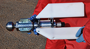
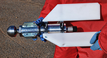
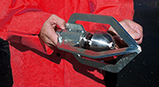
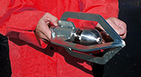
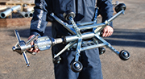
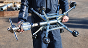

 

 

Centralizers
Maximize the cleaning effectiveness of Warthog sewer nozzles for specific job requirements
A centralizer helps to protect the tool as it passes through the pipe and balances jet standoff distance for more consistent cleaning. In cases where pipe size is more than 1.5 times the diameter of the tool, a centralizer is an important safety device, preventing the tool from turning around and thrusting backwards out of the pipe.
| Tool Model | WG-070 | |
|---|---|---|
| Skid Sizes | 6, 8, 10, 12 in. | 152, 203, 254, 305 mm |
| Tool Model | WG-085 | |
|---|---|---|
| Diameter | 6.85 in. | 174 mm |
| Min. Pipe Size | 7 in. | 178 mm |
| Tool Model | WG 286-M-P16 | |
|---|---|---|
| Diameter | 13-36 in. | 330-915 mm |
| Tool Model | WG 288-S-P16 | |
|---|---|---|
| Diameter | 16.5-22 in. | 420-560 mm |
Warthog Centralizer Demo
Our expert staff is available Monday through Friday 8AM - 5PM MST to answer questions and offer advice on your toughest cleaning applications. Ask about configuration options and extensions.